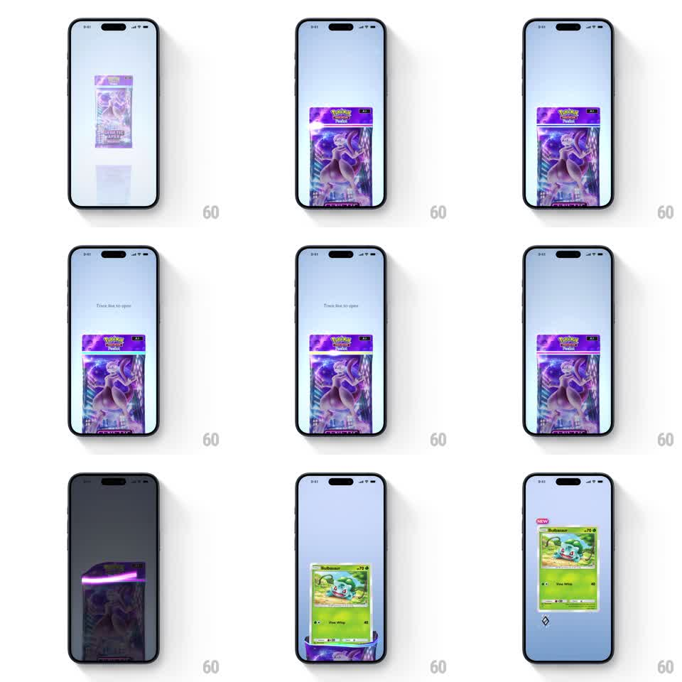

Media
Frame-by-frame

Rebuild this interaction 1:1: Pokemon TCG Pocket's pack opening - a booster pack scales in, a "trace the line" tear strip glows across its top, and the traced swipe rips the pack open to reveal the card rising out.

Rebuild this interaction 1:1: Pokemon TCG Pocket's pack opening - a booster pack scales in, a "trace the line" tear strip glows across its top, and the traced swipe rips the pack open to reveal the card rising out. ## Integration Integration: stack-agnostic spec - springs given as stiffness/damping, timed motions as duration + curve; map every value to your framework and animation library of choice. ## Scene A pale gradient table with a Pokemon TCG booster pack (Mewtwo artwork) at center, a "NEW" tag waiting off-screen. The pack scales up to fill the middle of the screen. A hint reads "Trace line to open" above a dashed tear strip across the pack's top. The user's swipe follows the strip, which glows as it tears; the top of the pack separates, the screen flashes, and a Bulbasaur card rises out of the opened pack, settling above it with a "NEW" badge. ## Motion spec Pattern: swipe-to-tear pack opening, gesture-driven tear plus 1.5s reveal. - The pack enters scaling from small to full (spring stiffness 280 damping 22) with a soft drop shadow growing beneath it. - The tear strip pulses a subtle glow (1.5s loop) until touched; the swipe traces 1:1 - the glow follows the finger along the dashed line, and the strip tears open progressively behind the touch point. - At full tear, the pack top flips back (300ms, ease-out), a bright flash blooms from the opening (200ms), briefly whiting the screen edges. - The revealed card rises from inside the pack (spring stiffness 260 damping 20), scales up past the pack, and settles center-upper with a slight forward tilt; the "NEW" tag pops onto its corner (spring stiffness 420 damping 18). ## Calibration - The tear follows the finger - partial swipes tear partially and can be continued. - The pack stays on screen, crumpled open below the revealed card. ## Reduced motion Tear completes on tap; card fades in. ## Don't miss - The card physically emerges from the pack's opening, not from the screen edge. - The flash comes from inside the pack.